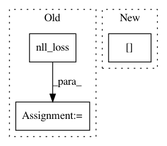

e73fddf45377e8a3c0ea2e8281fae18f7b498dd6,fairseq/criterions/label_smoothed_cross_entropy.py,LabelSmoothedCrossEntropyCriterion,forward,#LabelSmoothedCrossEntropyCriterion#Any#Any#Any#,66
Before Change
lprobs = lprobs.view(-1, lprobs.size(-1))
target = sample["target"].view(-1)
loss = LabelSmoothedNLLLoss.apply(lprobs, target, self.eps, self.padding_idx, None, reduce)
nll_loss = F.nll_loss(lprobs, target, size_average=False, ignore_index=self.padding_idx, reduce=reduce)
sample_size = sample["target"].size(0) if self.args.sentence_avg else sample["ntokens"]
logging_output = {
"loss": utils.item(loss.data) if reduce else loss.data,
"nll_loss": utils.item(nll_loss.data) if reduce else loss.data,
After Change
lprobs = model.get_normalized_probs(net_output, log_probs=True)
target = sample["target"].unsqueeze(-1)
non_pad_mask = target.ne(self.padding_idx)
nll_loss = -lprobs.gather(dim=-1, index=target)[non_pad_mask]
smooth_loss = -lprobs.sum(dim=-1, keepdim=True)[non_pad_mask]
if reduce:
nll_loss = nll_loss.sum()
smooth_loss = smooth_loss.sum()
In pattern: SUPERPATTERN
Frequency: 3
Non-data size: 3
Instances
Project Name: pytorch/fairseq
Commit Name: e73fddf45377e8a3c0ea2e8281fae18f7b498dd6
Time: 2018-03-05
Author: myleott@fb.com
File Name: fairseq/criterions/label_smoothed_cross_entropy.py
Class Name: LabelSmoothedCrossEntropyCriterion
Method Name: forward
Project Name: explosion/thinc
Commit Name: 4b0134242f0e79bcdb022623be29e1e7db5445fc
Time: 2020-01-04
Author: honnibal+gh@gmail.com
File Name: examples/scripts/ray_parallel.py
Class Name: DataWorker
Method Name: compute_gradients